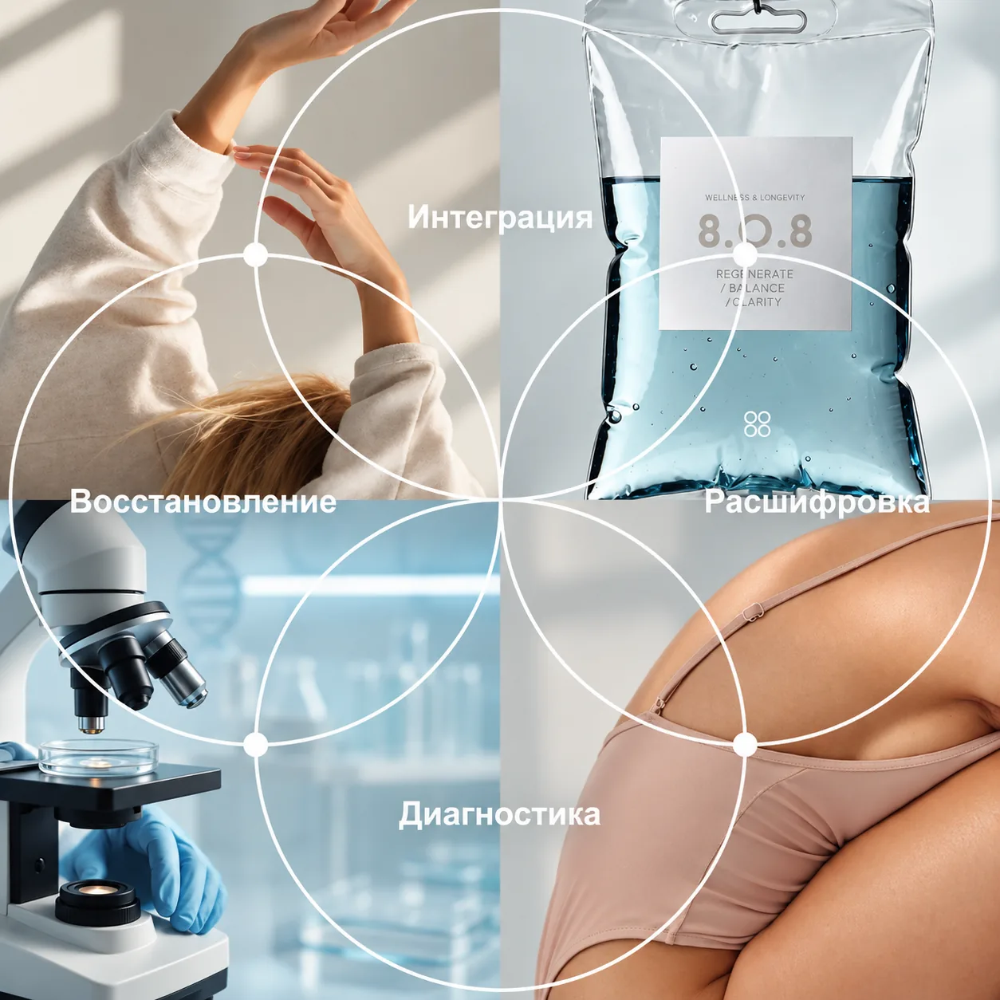
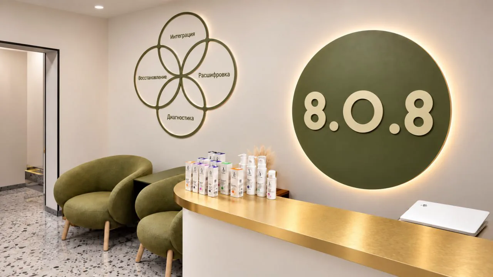

Кожа и внешность
Уход, пилинги, инъекционные и аппаратные методы. Начинаем с врачебной оценки кожи.
Первый шаг
Первичный приём врача-косметолога: осмотр, анамнез, план лечения
3 500 ₽

КЛИНИКА ЗДОРОВЬЯ И ЭСТЕТИКИ
Разбираемся в состоянии, объясняем взаимосвязи
и помогаем выбрать следующий шаг.
ТОЧКА ПЕРЕЗАПУСКА
Выберите, что ближе к вашему запросу. После первичного приёма врач составит для вас план лечения. Если сомневаетесь, администратор поможет записаться к нужному специалисту.
Уход, пилинги, инъекционные и аппаратные методы. Начинаем с врачебной оценки кожи.
Первый шаг
Первичный приём врача-косметолога: осмотр, анамнез, план лечения
3 500 ₽
Жалобы, анализы и назначенное лечение. Приём терапевта, эндокринолога, гастроэнтеролога, невролога и остеопата.
Первый шаг
Приём врача-терапевта: осмотр, консультация, план лечения
5 000 ₽
Можно записаться сразу на процедуру.
Первый шаг
ПОДХОД 8.0.8
Человек больше, чем отдельный симптом, показатель
или процедура. Для нас важно понимать ваш запрос
в контексте истории, состояния и повседневной жизни —
чтобы видеть не только отдельную задачу, но и человека целиком.
Четыре принципа помогают объяснить, как мы подходим к запросу человека.
Увидеть человека.
Начать с вашего запроса, истории и имеющейся информации. Понять, что требует внимания и какие данные действительно нужны для дальнейшей оценки.
Понять взаимосвязи.
Разобраться, что означает полученная информация именно в вашем случае. Объяснить выводы, возможные взаимосвязи и вопросы, которые ещё требуют уточнения.
Перейти от понимания к действию.
Обсудить дальнейшие действия с учётом вашего запроса, состояния и медицинских показаний. Понять задачи, возможности и ограничения выбранного подхода.
Сделать здоровье частью жизни.
Понять, как следовать рекомендациям в повседневной жизни, на что обращать внимание дальше и когда может понадобиться повторное обращение к специалисту.
Это принципы нашего подхода, а не обязательная программа.
Обращение в 8.0.8 может начаться с конкретной задачи.
НАПРАВЛЕНИЯ И УСЛУГИ
РАЗНЫЕ ЗАПРОСЫ
ОДИН ПОДХОД
В 8.0.8 объединены медицинские, восстановительные и эстетические направления. Можно прийти с конкретной задачей, выбрать знакомую услугу или сначала познакомиться с возможностями клиники.
Здоровая и красивая кожа в любом возрасте
приём 3 500 ₽
Снятие напряжения, восстановление и гармония тела
60 мин 5 000 ₽
Гладкость надолго, без компромиссов
от 400 ₽
Внимательная диагностика и забота о вашем здоровье
приём 5 000 ₽
По назначению врача, с учётом анализов
от 6 000 ₽
Естественный баланс и здоровье через бережное воздействие
приём 9 500 ₽
ГОРМОНАЛЬНЫЙ БАЛАНС И ЗДОРОВЬЕ
приём 5 000 ₽
ДИАГНОСТИКА И ПОДДЕРЖКА НЕРВНОЙ СИСТЕМЫ
приём 5 000 ₽
ИНДИВИДУАЛЬНЫЙ ПОДХОД К ПИТАНИЮ
записаться
ЗДОРОВЬЕ ЖКТ И КОМФОРТ
приём 5 000 ₽
ТОЧНЫЕ ИССЛЕДОВАНИЯ ДЛЯ ЗАБОТЫ О ВАС
записаться
КРАСОТА ЗДОРОВЬЕ БАЛАНС
Имеются противопоказания. Необходима консультация специалиста.
СПЕЦИАЛИСТЫ 8.0.8
В 8.0.8 работают специалисты разных направлений.
У каждого своя профессиональная экспертиза, но общий принцип:
внимательно разобраться в запросе человека и помочь определить обоснованный следующий шаг.

Врач-терапевт · клиническая фармакология
Назначенное лечение и принимаемые препараты
Подробнее


АКЦИИ 8.0.8
Курс 8 процедур по 3 200 ₽ вместо 4 300 ₽
Очищение пор, ровный тон и свежий цвет лица. 1 процедура – 4 300 ₽, курс из 4 – 14 800 ₽, из 8 – 25 600 ₽.
Имеются противопоказания. Необходима консультация специалиста.
ЗаписатьсяКурс из 3 процедур за 15 390 ₽ вместо 17 100 ₽
Увлажнение, сияние и качество кожи в одной программе. 1 процедура – 5 700 ₽.
Имеются противопоказания. Необходима консультация специалиста.
ЗаписатьсяКурс 10 сеансов за 45 000 ₽
Помогает при отёках и «зажатом» лице, делает овал чётче. 1 сеанс – 5 000 ₽, курс вместо 50 000 ₽.
Имеются противопоказания. Необходима консультация специалиста.
ЗаписатьсяСТОИМОСТЬ
На главной ориентиры по ключевым направлениям. Полный перечень услуг и актуальная стоимость собраны в прайсе.
ВОПРОСЫ И ОТВЕТЫ
Мы собрали ответы на самые частые вопросы, чтобы ваш визит прошёл максимально комфортно.
Врач выслушает ваш запрос, изучит историю и имеющиеся результаты, проведёт осмотр и объяснит, что рекомендует и почему. Первичный приём терапевта и врача-косметолога заканчивается планом лечения.
Расскажите администратору, с каким запросом вы хотите обратиться. Он поможет сориентироваться в направлениях клиники и выбрать подходящего специалиста для записи.
Да, если вы уже знаете, что вам нужно, можно выбрать конкретную услугу. Для некоторых процедур предварительно может потребоваться консультация специалиста. Об этом администратор сообщит при записи.
Если у вас есть результаты анализов, обследований или заключения других специалистов, их можно взять с собой. Врач определит, какая информация важна именно для вашего запроса и требуется ли что-то дополнительно.
Это зависит от выбранной услуги. Если подготовка необходима, администратор сообщит об этом при записи и подскажет, на что обратить внимание перед визитом.
Да. Обращение в 8.0.8 может начаться с конкретного специалиста, услуги или процедуры. Диагностика, расшифровка, восстановление и интеграция описывают наш подход и не являются обязательной программой для каждого пациента.
Врач выслушает ваш запрос, изучит историю и имеющиеся результаты, проведёт осмотр и объяснит, что рекомендует и почему. Первичный приём терапевта и врача-косметолога заканчивается планом лечения.
Расскажите администратору, с каким запросом вы хотите обратиться. Он поможет сориентироваться в направлениях клиники и выбрать подходящего специалиста для записи.
Да, если вы уже знаете, что вам нужно, можно выбрать конкретную услугу. Для некоторых процедур предварительно может потребоваться консультация специалиста. Об этом администратор сообщит при записи.
Если у вас есть результаты анализов, обследований или заключения других специалистов, их можно взять с собой. Врач определит, какая информация важна именно для вашего запроса и требуется ли что-то дополнительно.
Это зависит от выбранной услуги. Если подготовка необходима, администратор сообщит об этом при записи и подскажет, на что обратить внимание перед визитом.
Да. Обращение в 8.0.8 может начаться с конкретного специалиста, услуги или процедуры. Диагностика, расшифровка, восстановление и интеграция описывают наш подход и не являются обязательной программой для каждого пациента.
ЗАПИСЬ В 8.0.8
Оставьте контакты, и мы поможем организовать запись.
ВАШ ВИЗИТ В 8.0.8
Мы свяжемся с вами, чтобы подтвердить запись.
